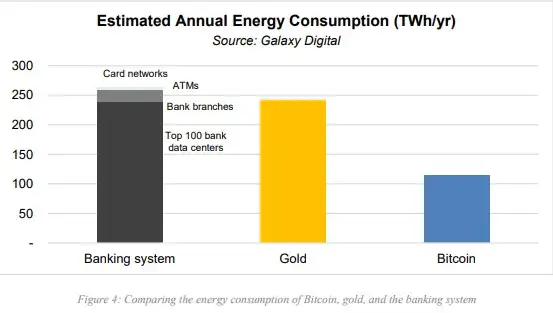

Por que o Bitcoin existe
O Bitcoin existe porque houve uma cadeia de eventos drásticos conhecido como a crise do sub-prime, essa crise explodiu no dia 15 de setembro de 2008, quando o Lehman brothers, um dos bancos de investimentos mais tradicionais dos estados unidos declarou falência, e no mesmo dia a bolsa de valores despencou, na sequencia muitos outros bancos começaram a anunciar perdas bilionárias que só aumentaram a instabilidade no mercado, a irresponsabilidade dos banqueiros aterrissou no colo dos contribuintes com uma controversa decisão do Gov. dos estados unidos, com eles usando 700 bilhões em dinheiro publico para salvar o sistema financeiro, e é nesse cenário que nasce o bitcoin.
O Bitcoin existe para que o individuo tenha a maior independência financeira, ele é a separação do dinheiro do estado
O que e o bitcoin?
O Bitcoin e uma versão puramente ponto-a-ponto de dinheiro eletrônico permitindo o envio de pagamentos interativos diretamente de uma pessoa para outro sem passar por uma instituição financeira, antes do Bitcoin ser inventado, muitos entusiastas tentaram criar um meio de pagamento descentralizado, mas todos eles se paravam na incapacidade de impedir os gastos duplos no sistema.
mas o que e esse problema de gasto duplo?
O principal problema na criação de um sistema estável de pagamentos descentralizados foi a capacidade de copiar transações de pagamento, o que causa o risco de re-gastar fundos. Gastos duplos são uma espécie de re-gastos. Digamos que na vida real uma pessoa decidiu comprar uma xícara de café por US$ 1 em um café. Ao pagar, o dinheiro é transferido para o caixa do café e é impossível gastá-lo novamente. As moedas digitais são diferenciadas pelo fato de não serem fisicamente transferidas. Portanto, antes que a transação seja verificada e executada, os fundos permanecem na carteira. Isso significa que, no intervalo entre o envio da transação e o fato de sua conclusão após a verificação, é possível um segundo pagamento.
como evitar o problema de gasto duplo?
a rede vai inserir data e hora nas transações através de um hash, em uma cadeia continua de prova de trabalho a base de hash, formando um registro que não pode ser alterado sem refazer a prova de trabalho, a cadeia mais longa não só serve como prova de sequencia de eventos testemunhados, mas prova que ela veio do maior pool de cpu, enquanto a maioria do poder das cpus e controlado por nós/node que não estão cooperando para atacar a rede, eles irão gerar a cadeia mais longa e superar os atacantes, a própria rede requer estrutura mínima, as mensagens são espalhadas em regime de melhor esforço, e nós podem sair e regressar cadeias a vontade aceitando a cadeia mais longa de prova de trabalho, como prova do que aconteceu enquanto eles estavam fora.
Vantagens e Desvantagens do Bitcoin
Vantagens:
Tem tarifas mais baixas
Posto que as transações vão de pessoa a pessoa eliminando o banco da transação, os custos associados com o Bitcoin são muito menores. A tarifa de transação média do Bitcoin é menos de 1% da transação, enquanto que as tarifas podem variar de 2-9% para as moedas convencionais.
Pode ser utilizada em todos os países
Diferente das moedas convencionais que mudam de acordo com o país, O Bitcoin pode ser utilizado em todos os países. É, essencialmente, uma moeda global. Isto lhe economizará dinheiro em tarifas de conversão e promete eliminar as fronteiras comerciais.
Não pode ser congelada
Os governos não podem embargar Bitcoins da forma que podem embargar moedas convencionais. Já que sua riqueza não pode ser congelada, Bitcoin lhe dá a liberdade de fazer o que quiser com seu dinheiro
Desvantagens:
Seu valor é volátil
O poder aquisitivo do Bitcoin é volátil desde a introdução da moeda virtual, com valores que vão por abaixo de $1 ate mais de $1100. A diferença das moedas convencionais, que são armazéns estáveis de valor, o valor do Bitcoin não está garantido. O porta-voz da Fundação Bitcoin Jinyoung Englund previne, “estivemos dizendo todo o tempo que os investidores não deveriam investir mais no Bitcoin do que estão dispostos a perder.”
Adoção em massa.
A cada dia que passa cada vez mais lojas aceitam os bitcoins como forma de pagamento. Existem cada vez mais caixas eletrônicos de bitcoin. Mas a medida em que os mercados tornam-se cada vez mais caótico e as pessoas começam a usar cada vez mais bitcoin, é inevitável que as lojas fazem aceitar cada vez mais.
Escalabilidade.
O bitcoin ainda vai precisar ser minerado por mais cem anos até atingir sua exaustão. E cada vez mais que novos bitcoins são minerados maior é a dificuldade para se minerar o próximo bitcoin. Logo, cada vez mais será necessário mais volume de energia elétrica. Mas até para isso estão sendo criadas alternativas, como a energia solar, por exemplo.
Bitcoin e poluente?
A mineração de bitcoins e outras criptomoedas consome muita energia elétrica.
De acordo com o Cambridge Bitcoin Electricity Consumption Index, a rede do bitcoin consome mais energia que países como Argentina, Noruega e Paquistão.Inicialmente, sua capacidade de mineração estava localizada na Bósnia e na China, mas hoje eles estão concentrados na Islândia e no Canadá. O clima frio — combinado com preços de eletricidade baratos — torna esses países atraentes para a mineração de criptomoeda.
Com a crescente procura por máquinas de mineração e mais pessoas entrando nesse mercado, essa preocupação com o meio ambiente é justificada em um primeiro momento.
Entretanto, um estudo recente da Galaxy Digital publicado na última semana traz uma nova perspectiva sobre o tema. Intitulada “On Bitcoin's Energy Consumption: A Quantitative Approach to a Subjective Question” (“Sobre o consumo de energia do Bitcoin: uma abordagem quantitativa para uma questão subjetiva”, em tradução livre), os autores da pesquisa buscam comparar o consumo de energia elétrica do bitcoin com outros sistemas. A conclusão é de que o bitcoin consome apenas metade da energia do sistema bancário atual. E mais: o uso de energia para fomentar o mercado de ouro também é maior do que o bitcoin.
De acordo com o levantamento, a rede do bitcoin consome um total de 113,89 TWh por ano, enquanto a indústria do ouro utiliza cerca de 240,61 TWh para o mesmo período. Enquanto isso, todo o sistema bancário, incluindo os data centers dos 100 maiores bancos do mundo, agências bancárias, caixas eletrônicos e redes de cartão, consome 263,72 TWh por ano.
Ou seja, toda a rede do bitcoin representa só 43,18% do que consome todo o sistema bancário atual. Os responsáveis pelo estudo ainda destacam que o bitcoin pode ser uma forma de liberdade financeira para as pessoas.
O lastro do bitcoin
A constatação de que o bitcoin é desprovido de lastro leva inúmeros economistas a taxar a moeda digital de débil e inerentemente defeituosa.
No atual sistema de inconversibilidade absoluta dos papéis-moedas nacionais – não há qualquer lastro em ouro, o papel-moeda tornou-se a moeda propriamente dita, a experiência de mais de quase meio século comprovou que banco central nenhum conseguiu abster-se do poder de emissão de dinheiro, depreciando as respectivas moedas nacionais em uma espécie de corrida ao fundo do poço ao longo de todos esses anos.
Com o Bitcoin, o dilema da provisão da oferta monetária foi equacionado: a emissão será realizada de forma competitiva e paulatinamente, a uma taxa de crescimento preestabelecida, limitada a 21 milhões de unidades. Uma legítima escassez, intangível, e matemática e criptograficamente assegurada.
- Qual o lastro do ouro? A escassez inerente a suas propriedades físico-químicas.
- Qual o lastro do papel-moeda fiduciário? A confiança de que governos não inflacionarão a moeda, apoiada em leis de curso forçado que obrigam os cidadãos a aceitar a moeda como pagamento.
- Qual o lastro do Bitcoin? Propriedades matemáticas que garantem uma oferta monetária, cujo aumento ocorre a um ritmo decrescente a um limite máximo e pré-sabido por todos os usuários da moeda. Após um bem ser empregado e reconhecido como moeda, seu lastro jaz na sua escassez relativa.
Mas qual a distinção chave entre o lastro do ouro e o do Bitcoin e o lastro das moedas estatais? O lastro físico é naturalmente provido de ou pretende assegurar uma escassez de oferta, assim como o lastro matemático do Bitcoin. O lastro governamental, porém, garante unicamente uma demanda mínima, mas não uma oferta inelástica. Em outras palavras, o lastro estatal não assegura uma moeda boa, apenas que até uma moeda ruim tenha vasta aceitação no mercado.